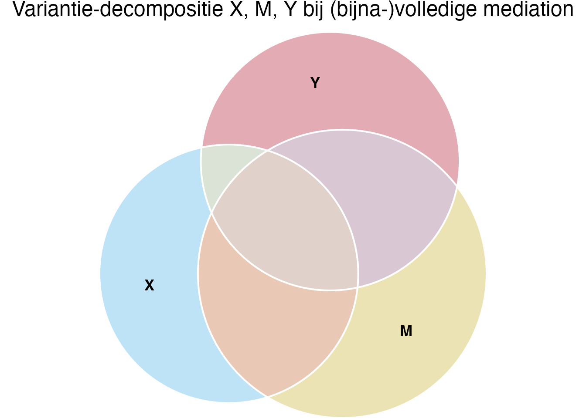
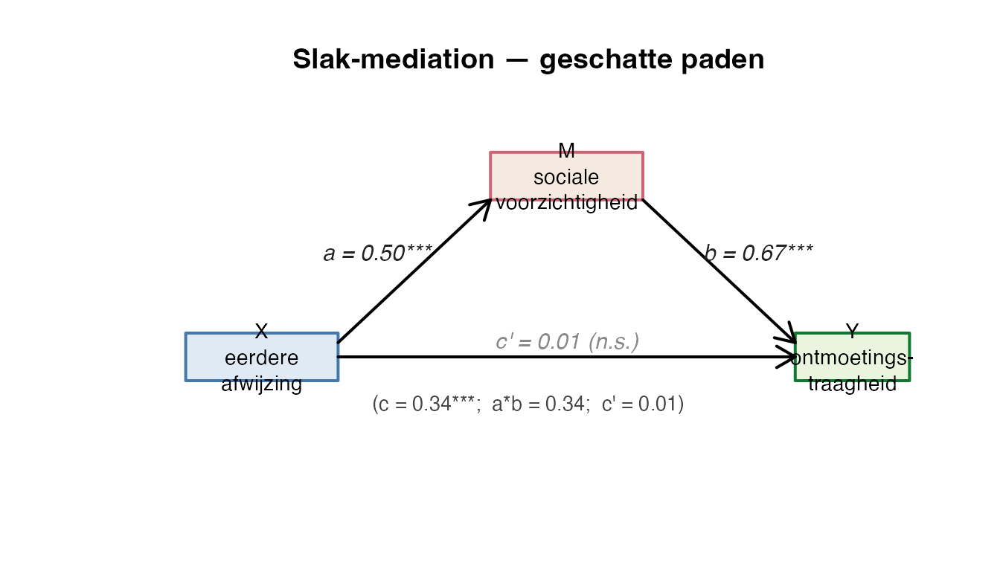

Een slak zat onder een blad en keek naar drie andere slakken die kwamen aanlopen.
De eerste droeg iets op zijn rug. Hij gaf het door aan de tweede. De tweede droeg het verder, en legde het bij de derde af.
“Mooi,” dacht de slak, “het pakje gaat van de eerste naar de derde — maar nooit rechtstreeks. Altijd via die tussen-slak.”
Hij dacht er nog een tijd over door, want zo werkte zijn eigen leven ook. Iemand zei iets, en het effect kwam pas later — via een gedachte die hij eerst nog moest verwerken. Niet rechtstreeks. Niet als bevel. Als doorgegeven stokje.
Een statisticus die dit had gezien zou hebben geknikt en mediation hebben gezegd. Een effect dat niet direct loopt, maar via een tussenpersoon.
Negentig slakken doen mee in dit thema. Bij elk is genoteerd hoe vaak hij in eerdere ontmoetingen werd weggetrokken (eerdere_afwijzing, \(X\)), hoe sociaal voorzichtig hij in zijn binnenste is geworden (sociale_voorzichtigheid, \(M\)), en hoe traag hij naar een nieuwe slak toe kruipt (ontmoetingstraagheid, \(Y\)). De vraag is niet of \(X\) samenhangt met \(Y\) — dat doet het waarschijnlijk wel. De vraag is of \(X\) zijn werk doet via\(M\), of ook buiten \(M\) om.
De techniek heet mediation-analyse. Bij mediation stel je drie vragen aan je gegevens:
Loopt het effect via \(M\)? — schat het indirect-effect \(\hat{a}\hat{b}\) en toets het via Sobel of een variant.
Hoeveel blijft er over zonder \(M\)? — schat het direct-effect \(\hat{c}'\) door \(X\) en \(M\) samen op \(Y\) te regresseren. Bij volledige mediation: \(\hat{c}' \approx 0\).
Klopt het allemaal wel? — temporele volgorde (\(X\) vóór \(M\) vóór \(Y\)), geen vergeten verstoorder die de samenhang kunstmatig opklopt, en lineaire patronen.
NoteA. Wat is mediation? — een estafette
Stel je voor: een estafetteloop met drie lopers. Loper-1 (\(X\)) krijgt het stokje en geeft het aan loper-2 (\(M\)). Loper-2 geeft het aan loper-3 (\(Y\)). Het stokje legt de hele afstand af, maar telkens via de tussenstap.
Dat is wat mediation modelleert. Drie paden:
\(a\)-pad: \(X \to M\). Hoe groot is de stoot van loper-1 op loper-2? Geschat met lm(M ~ X).
\(b\)-pad: \(M \to Y\), controlerend voor \(X\). Hoe groot is de stoot van loper-2 op loper-3, los van wat loper-1 ook nog rechtstreeks doet? Geschat met lm(Y ~ X + M), \(b\) is de coëfficiënt op \(M\).
\(c'\)-pad: \(X \to Y\), controlerend voor \(M\). Heeft loper-1 nog een eigen sprint naar loper-3, naast de estafette? Dezelfde regressie, \(c'\) is de coëfficiënt op \(X\).
Het totaal-effect\(c\) is de gewone bivariate samenhang van \(X\) op \(Y\), zonder \(M\) in het model. Geschat met lm(Y ~ X). Dat is wat een buitenstaander zou meten als hij niet weet dat \(M\) tussenin zit.
De decompositie van het totaal-effect:
\[
c = c' + a \cdot b
\]
In woorden: het totaal-effect is wat \(X\) rechtstreeks aan \(Y\) levert (\(c'\)) plus wat \(X\) via \(M\) aan \(Y\) levert (\(a\) keer \(b\), het indirect-effect). Bij volledige mediation is \(c' \approx 0\) en doet \(X\) zijn werk volledig via \(M\). Bij partiële mediation blijft \(c'\) staan en is er ook een directe route. Bij suppressie zijn \(a \cdot b\) en \(c'\) tegengesteld in teken — de tussen-loper draagt het stokje tegen loper-3 in. Dan kan \(|c| < |c'|\). Daarover meer in 7.A.
NoteB. Baron-Kenny stappen (1986)
Een klassieke aanpak om mediation vast te stellen, in vier stappen:
\(c\) moet significant zijn: lm(Y ~ X) — laat zien dat \(X\) en \(Y\) überhaupt samenhangen. (Zie kritiek hieronder.)
\(a\) moet significant zijn: lm(M ~ X) — laat zien dat \(X\) de mediator beïnvloedt.
\(b\) moet significant zijn na controle voor \(X\): lm(Y ~ X + M) — laat zien dat \(M\) uniek bijdraagt aan \(Y\), los van \(X\).
\(c'\) moet kleiner zijn dan \(c\): zelfde regressie als stap 3 — als \(c' < c\), is een deel van het effect via \(M\) gelopen. Bij volledige mediation: \(c' \approx 0\). Bij partiële: \(c'\) is kleiner maar nog steeds significant.
Naast deze causal steps voer je een formele toets uit op het indirect-effect \(a \cdot b\), zoals Sobel (1982). De cursus gebruikt geen bootstrap; daarover 7.2.
Kritiek op stap 1. Hayes (2018) en MacKinnon, Krull & Lockwood (2000) bepleiten stap 1 weg te laten. Argument: bij inconsistente mediation (suppressie) kunnen \(c'\) en \(a \cdot b\) tegengesteld teken hebben, waardoor \(c\) klein of nul is — terwijl het indirect-effect significant aanwezig is. Stap 1 elimineert dat soort gevallen ten onrechte. De moderne consensus is: toets \(a \cdot b\) direct (Sobel-familie of bootstrap), niet \(c\) als poortwachter. Dit werkboek volgt de cursus en presenteert de vier stappen, maar laat 7.A zien waarom stap 1 eigenlijk overslaan beter is.
NoteC. Slak-frame — wat onderzoeken we?
De slak ervaart iets sociaals — vroege afwijzing, kleine missers, weggetrokken voelers. Hij ontwikkelt daaruit een innerlijke voorzichtigheid: een soort sociale buffer voor toekomstige ontmoetingen. En in nieuwe ontmoetingen vertalen zich beide samen in zijn waargenomen gedrag: traag of vlot naar een nieuwe slak toe.
De vraag van dit thema: gaat het effect van eerdere afwijzing op huidige ontmoetingstraagheid grotendeels via de sociale voorzichtigheid, of klimt afwijzing rechtstreeks in het gedrag?
NoteHoe dit hoofdstuk leest
Dit hoofdstuk volgt dezelfde drie-laagse structuur als thema 1 t/m 6:
Verhaal-frame — wat de slak doet of denkt.
Algemene vorm — abstract, statistiek-Latijn met X, M, Y en mijn_data.
Voor onze dieren — uitvoerend, met # hekjes en concrete namen.
Plus de antwoorden in zacht groen (collapse), vragen in indigo, leesregels in mauve, alarm in oranje, don’ts in rood. T-vragen vlechten zich tussen de hoofdvragen door om je rekenintuïtie te oefenen.
Werkmaterialen — R-pakketten en functies
De slak pakt zijn gereedschap
Gereedschap
Waar het voor is
Pakket
lm(Y ~ X)
Totaal-effect \(c\)
base
lm(M ~ X)
\(a\)-pad — \(X \to M\)
base
lm(Y ~ X + M)
\(b\)-pad en \(c'\)-pad samen
base
summary(lm_obj)$coefficients
Coëfficiënten + \(SE\) + \(t\) + \(p\)
base
confint(lm_obj)
Betrouwbaarheidsintervallen
base
bda::mediation.test()
Sobel + Aroian + Goodman in één
bda
eulerr::euler()
Venn-diagram voor variantie-decompositie
eulerr
ggforce::geom_circle()
Pad-diagram met cirkels
ggforce
NoteWaarom drie aparte regressies en geen pakket-wrapper?
R kent geen mediation()-functie in base; pakketten als mediation, lavaan en bda doen het wrapper-werk. Voor het practical-tentamen volstaat de hand-geschreven route: drie OLS-regressies en daarna één Sobel-toets. Dat zie je hieronder. Het pakket bda::mediation.test() is een snelle controle achteraf — niet de hoofdtechniek.
Notatie — symbolen voor mediation
NoteSleutelsymbolen in dit hoofdstuk
In dit werkboek zie je telkens dezelfde notatie:
\(X\) — de onafhankelijke variabele (predictor). Hier: eerdere_afwijzing.
\(M\) — de mediator. Hier: sociale_voorzichtigheid.
\(Y\) — de afhankelijke variabele (outcome). Hier: ontmoetingstraagheid.
\(a\) — geschatte regressiecoëfficiënt van \(M\) op \(X\) (uit lm(M ~ X)).
\(b\) — geschatte regressiecoëfficiënt van \(Y\) op \(M\), controlerend voor \(X\) (uit lm(Y ~ X + M)).
\(c\) — geschat totaal-effect van \(X\) op \(Y\) (uit lm(Y ~ X)).
\(c'\) — geschat direct-effect van \(X\) op \(Y\), controlerend voor \(M\) (uit lm(Y ~ X + M)).
\(a \cdot b\) — geschat indirect-effect via \(M\).
\(s_a\), \(s_b\) — standaardfouten van \(\hat{a}\) en \(\hat{b}\).
\(z\) — Sobel-, Aroian- of Goodman-toetsstatistic op \(\hat{a}\hat{b}\).
Voor inferentie spreek je over de populatie-parameters \(a^*\), \(b^*\), \(c^*\), \(c'^*\) (asterisk-notatie); voor rapportage over de geschatte \(\hat{a}\), \(\hat{b}\), \(\hat{c}\), \(\hat{c}'\). APA-italic geldt voor enkele Latijnse symbolen (\(a\), \(b\), \(c\), \(X\), \(M\), \(Y\), \(r\), \(t\), \(p\), \(z\), \(N\), \(n\)); multi-letter symbolen rechtop (\(\text{Sobel}\), \(\text{SE}\), \(\text{IND}\)).
TipWat moet je echt uit je hoofd kennen?
Stampen is een vies woord buiten de toetsweek, maar daar binnen helpt het écht. Voor mediation zijn er vijf dingen die je zonder spiekblad moet kunnen oproepen — herhaal ze hardop tot ze blijven plakken:
Decompositie-identity: \(c = c' + a \cdot b\) — het totaal-effect splitst in een direct stuk en een indirect stuk. Geen toeval, een algebraïsche noodzakelijkheid bij OLS.
Sobel-SE-formule (drie termen onder de wortel): \(SE_{ab} = \sqrt{b^2 \cdot SE_a^2 + a^2 \cdot SE_b^2 + SE_a^2 \cdot SE_b^2}\)
Sobel-z: \(z = \dfrac{a \cdot b}{SE_{ab}}\). Dit is gewoon “geschatte effect-grootte gedeeld door standaardfout” — net als bij elke andere \(t\)- of \(z\)-toets.
De heilige \(z = 1.96\) voor tweezijdig \(\alpha = .05\). Geen \(z\)-tabel meer nodig — vanaf \(|z| \geq 1.96\) verwerp je \(H_0\).
Decompositie van het totaal: \(\text{prop}_{\text{med}} = \dfrac{a \cdot b}{c}\) en \(\text{prop}_{\text{direct}} = \dfrac{c'}{c}\). Samen moeten ze (op afrondingsfouten na) optellen tot 1.
Deze vijf zijn samen het skelet van de Sobel-route. Als ze in je hoofd staan, hoef je tijdens het tentamen alleen nog netjes de cijfers te combineren — niet meer na te denken wat-precies-waar.
Vuistregels zijn afspraken, geen wetten
De drempels in dit werkboek zijn breed gangbare conventies — niet universeel:
Steekproefgrootte: \(n \geq 50\) is een gangbare ondergrens voor stabiele Sobel-toetsing. Bij kleine \(n\) wijkt de verdeling van \(\hat{a}\hat{b}\) sterk af van normaliteit; dan zou bootstrap een betere keuze zijn (de cursus volgt die niet, dus rapporteer voorzichtig).
Welke toets: rapporteer Sobel als primary. Aroian (1944) en Goodman (1960) zijn varianten met een extra term \(s_a^2 \cdot s_b^2\) in de noemer (Aroian: optellen, Goodman: aftrekken). Verschillen worden verwaarloosbaar bij \(n\) groot.
Volledige vs partiële mediation: \(c'\) niet-significant na correctie voor \(M\) → volledige mediation. \(c'\) wel significant maar duidelijk kleiner dan \(c\) → partiële. Beide aannames over de causale structuur — geen wiskundig bewijs.
Decompositie-controle: \(c \approx c' + a \cdot b\) moet exact uitkomen op de getallen (afgezien van afrondings-ruis). Klopt dat niet, dan zit er een fout in je code of je data — vermoedelijk verschillende \(N\) tussen de drie regressies door missing-cases-deletie.
Indirect-effect betrouwbaarheidsinterval: Sobel geeft een symmetrisch normaal-CI rond \(\hat{a}\hat{b}\). Bij scheve verdelingen (typisch bij \(\hat{a}\hat{b}\)) onderschat dat. Hayes (2018) bepleit bootstrap; de cursus gebruikt Sobel — een keuze, geen natuurwet.
Causale aannames: temporele volgorde (\(X\) vóór \(M\) vóór \(Y\)), geen ongemeten verstoorder die \(M\) en \(Y\) allebei beïnvloedt, lineaire paden. Mediation toetst niet de causaliteit — die nemen we aan.
Verschillende vakgroepen, docenten en handboeken kiezen iets andere drempels. Als je voor een tentamen of opdracht werkt, check altijd in je eigen college-sheets welke drempels je docent of vakgroep hanteert. Wij volgen hier consistent één set, maar dat is een keuze, geen natuurwet.
NoteCode in dit hoofdstuk — wat moet je kunnen typen?
Code is standaard open als je hem moet kunnen typen op het R-practical-tentamen: lm(Y ~ X), lm(M ~ X), lm(Y ~ X + M), summary(.)$coefficients, en de Sobel-formule met de hand. Code die alleen ter illustratie dient — Venn-diagrammen, pad-diagrammen, gt-tabellen, decoratie-plots — staat ingeklapt met een knopje “Toon code”. Klap hem open als je nieuwsgierig bent; voor het tentamen hoef je hem niet te reproduceren.
7.0 Project- en datavoorbereiding
Aantekeningen netjes, paden kloppen
Open de meegestuurde projectmap (07_mediatie/) en dubbelklik op 07_mediatie.Rproj. Daarmee staat je werkomgeving klaar: paden kloppen, RStudio kent de juiste werkmap. De data ligt al in data/, de helper-functies in functions/. Niets te installeren als de pakketten (tidyverse, bda, eulerr, ggforce) op je computer staan; anders één keer:
Per slak vier waarden: een slak_id plus drie continue scores op de schaal \(0\)-\(100\). De drie variabelen vormen het voorgestelde mediation-pad: eerdere_afwijzing (\(X\)) → sociale_voorzichtigheid (\(M\)) → ontmoetingstraagheid (\(Y\)).
NoteWat zit nog meer in slak_ontmoetingen.RData?
Naast slak_ontmoetingen (\(n = 90\)) bevat het bestand een tweede object: slak_suppressie (\(n = 80\) andere slakken, een aparte studie naar bouwvaardigheid en perfectionisme). Dat tweede object gebruiken we pas in 7.A om suppressie te illustreren. Voor 7.1 en 7.2: slak_ontmoetingen is genoeg.
7.1 Het mediation-model fitten en interpreteren
Drie regressies, één estafette
“Eerst kijken of het pakje überhaupt aankomt,” zei de slak. “Daarna of de tussen-slak het krijgt. Dan of de tussen-slak het doorgeeft. En tot slot: blijft er nog wat over voor de directe weg?”
NoteVoor je gaat rekenen — vijf vragen aan jezelf
Het stappenplan, opnieuw, met de techniek-keuze als laatste stap.
Wie of wat wordt er gemeten?De slak heeft \(90\) slakken genoteerd, elk drie keer (één \(X\), één \(M\), één \(Y\)).
Wat wordt er gemeten?Drie variabelen: eerdere_afwijzing, sociale_voorzichtigheid, ontmoetingstraagheid. Allemaal continu op een \(0\)-\(100\) schaal.
Onafhankelijk of afhankelijk?De onderzoeksvraag stelt een causaal pad voor: \(X\) (\(\to M\)) \(\to Y\). Dus \(X\) = eerdere_afwijzing, \(M\) = sociale_voorzichtigheid, \(Y\) = ontmoetingstraagheid. De rol van \(M\) is bemiddelend, niet zomaar een tweede predictor.
Meetniveau van elke variabele?Alle drie interval (\(0\)-\(100\)).
Welke techniek? Doorloop de beslisboom:
flowchart TD
A[Stel je een<br/>causaal pad voor?] -->|nee, alleen samenhang| B[gewone regressie<br/><i>thema 1</i>]
A -->|ja, $X \to Y$ via $M$| C[Welke variabelen?]
C -->|alle drie continu| Z[Mediation-analyse<br/><i>dit thema</i>]
C -->|$M$ binair| D[Logistieke mediation<br/><i>buiten cursus</i>]
C -->|herhaalde metingen op M| E[Multilevel mediation<br/><i>buiten cursus</i>]
A -->|alleen interactie| F[Moderation-analyse<br/><i>geen mediation</i>]
style Z fill:#faf3e2,stroke:#c9a05a,stroke-width:2px
NoteBens pijltjes-overzicht — alle MVDA-technieken in één tabel
Dezelfde keuze, anders genoteerd. Lees als predictor(en) (meetniveau) → DV(s) (meetniveau):
#
Predictor(en)
DV(s)
Techniek
dich |X|
|Y| int
\(t\)-toets
nom 3+lvl |X|
|Y| int
éénweg ANOVA
1
int |X X …|
|Y| int
MRA — thema 1
2
nom |X X|
|Y| int
factorial ANOVA — thema 2
3
nom + int |X C|
|Y| int
ANCOVA — thema 3
4
bo(in) |X|
|Y| bin
LRA — thema 4
5
nom |X|
|Y₁ Y₂ …| int
MANOVA — thema 5
6
within-subject momenten
|Y₁ Y₂ Y₃ Y₄| int
RMA — thema 6
7
indirect via \(M\)
\(X \to M \to Y\) pad
Mediation — thema 7
Drie continue variabelen, één voorgesteld causaal pad. Antwoord: mediation-analyse via Baron-Kenny stappen plus Sobel.
ImportantMediatie ≠ moderatie — wees scherp op tentamen-stellingen
Bij mediatie loopt het effect via een tussenstap: \(X \rightarrow M \rightarrow Y\). Eén pad, doorgegeven als estafette. Het kernwoord in tentamen-stellingen is meestal “via” of “omdat” of “door middel van”.
Bij moderatie verschilt het effect van X op Y afhankelijk van het niveau van een derde variabele \(Z\). Geen pad, maar een interactie (zoals in tweeweg-ANOVA, thema 2 — hoofdeffect A, hoofdeffect B, en de interactie A × B). Het kernwoord is meestal “sterker bij”, “alleen bij” of “hangt af van”.
In tentamen-stellingen kan een vraag over mediatie misleidend moderatie-taal bevatten en omgekeerd. Tentamen-test: lees de stelling letterlijk over en vraag jezelf: “gaat het hier om iets dat via iets anders loopt, of om iets dat anders sterk is bij verschillende niveaus?”
Probeer die twee dingen nooit door elkaar te halen — ze toetsen wezenlijk andere modellen.
T1 — Techniek-keuze: mediation, moderation, gewone regressie of pad-analyse?
NoteVraag T1 — Pen-en-papier
Voor elk vignet: kies tussen mediation, moderation, gewone regressie of pad-analyse.
a)Een onderzoeker vermoedt dat eenzaamheid (\(X\)) leidt tot minder slaap (\(M\)), wat weer leidt tot meer prikkelbaarheid (\(Y\)).
b)Een onderzoeker vermoedt dat het effect van een training (\(X\)) op prestatie (\(Y\)) sterker is bij mannen dan vrouwen (\(Z\)).
c)Een onderzoeker wil weten of leeftijd, opleiding en inkomen samen prestatie voorspellen, zonder een causaal pad te veronderstellen.
d)Een onderzoeker vermoedt een keten: pestervaring (\(X\)) → zelfbeeld (\(M_1\)) → vermijding (\(M_2\)) → eenzaamheid (\(Y\)). Twee mediators in serie.
CautionAntwoord T1 — open na je eigen poging
a) Een keten met één mediator \(\Rightarrow\)mediation-analyse. Drie regressies plus Sobel — het hoofdspoor van dit thema.
b) Een interactie tussen voorspellers (training \(\times\) geslacht) \(\Rightarrow\)moderation-analyse. Mediation onderzoekt het pad; moderation het verschil-in-effect. Wezenlijk andere vraag.
c) Geen voorgesteld causaal pad, alleen samenhang \(\Rightarrow\)gewone regressie (thema 1). Mediation vereist een vooraf-veronderstelde keten — anders is het data-fishing achteraf.
d) Twee mediators in serie \(\Rightarrow\)pad-analyse (sequential mediation). Strikt genomen mediation met meerdere mediators — buiten het cursus-kernspoor; pakket lavaan of mediation. Kort beschreven onder multiple mediators verderop.
Vuistregel. Causaal pad via een tussenpersoon = mediation. Verschil-in-effect tussen groepen of niveaus = moderation. Samenhang zonder pad = gewone regressie. Meer dan één tussenpersoon = pad-analyse / SEM.
7.1.a Verkenning — gemiddelden, correlaties en scatter
b) Welke twee variabelen hangen het sterkst samen? Welke het zwakst?
c) Past het patroon bij een mediation-keten? Zou je \(r_{XM}\) en \(r_{MY}\) allebei groot verwachten?
d) Wat zegt \(r_{XY}\) in het licht van \(r_{XM}\) en \(r_{MY}\)? Kunnen ze allemaal positief?
e) Wat zou je in de scatter-matrix willen zien dat een mediation-patroon ondersteunt?
CautionAntwoord 7.1.a — open na je eigen poging
In gewone woorden.
\(n = 90\) slakken.
De sterkste samenhang is tussen sociale_voorzichtigheid en ontmoetingstraagheid (\(r_{MY} = .642\)); de zwakste tussen eerdere_afwijzing en ontmoetingstraagheid (\(r_{XY} = .402\)). \(r_{XM} = .616\) ligt daar tussenin.
Bij een mediation-keten verwacht je \(r_{XM}\) en \(r_{MY}\) allebei stevig en niet-nul (anders is er geen pad om langs te lopen).
\(r_{XY}\) kan in principe alle waarden aannemen — bij volledige mediation hangt \(X\) alleen via \(M\) samen met \(Y\), en is \(r_{XY} \approx r_{XM} \cdot r_{MY} = .616 \cdot .642 \approx .395\), vergelijkbaar met de waargenomen \(.402\). Klopt dus.
In de scatter-matrix wil je drie positieve en lineaire clouds zien, geen kromming en geen extreme outliers.
APA-stijl.
Bij \(n = 90\) slakken bedroegen de gemiddelden \(M_X = 49.59\) (\(SD = 15.67\)) voor eerdere afwijzing, \(M_M = 51.95\) (\(SD = 12.67\)) voor sociale voorzichtigheid en \(M_Y = 39.63\) (\(SD = 13.45\)) voor ontmoetingstraagheid. De correlaties waren positief en in lijn met een mediation-patroon (\(r_{XM} = .62\), \(r_{MY} = .64\), \(r_{XY} = .40\)).
T2 — Decompositie \(c = c' + ab\) — handrekenen
NoteVraag T2 — Pen-en-papier
Een onderzoeker vond bij een mediation-analyse: \(\hat{a} = 0.40\), \(\hat{b} = 0.50\), \(\hat{c}' = 0.10\).
a) Bereken het indirect-effect \(\hat{a}\hat{b}\).
b) Bereken het totaal-effect \(\hat{c}\) via de decompositie.
c) Welk percentage van het totaal-effect loopt via \(M\)? (proportie mediated)
d) Bij welke waarden van \(\hat{c}'\) zou je van volledige mediation spreken? Bij welke van partiële?
CautionAntwoord T2 — open na je eigen poging
a)\(\hat{a}\hat{b} = 0.40 \cdot 0.50 = 0.20\) — het indirect-effect via \(M\).
c) Proportie mediated \(= \hat{a}\hat{b} / \hat{c} = 0.20 / 0.30 \approx 67\%\). Tweederde van het totaal-effect loopt via \(M\).
d)Volledige mediation: \(\hat{c}' \approx 0\) en niet-significant na controle voor \(M\). Partiële: \(\hat{c}'\) blijft significant maar is kleiner dan \(\hat{c}\). De grens is een conventie — sommige onderzoekers eisen \(\hat{c}'\) niet-significant en\(|\hat{c}'/\hat{c}| < 0.10\) voor “volledig”; anderen alleen het eerste.
Inzicht. De decompositie \(c = c' + ab\) is geen toevallige eigenschap maar een algebraïsche identiteit van OLS-regressie. Klopt het op de getallen niet, dan is er iets mis (verschillende \(N\), missende cases, of een coderingsfout). Het is je eigen sanity-check.
7.1.b De drie regressies — totaal, \(a\)-pad, \(b\)+\(c'\)-pad
Algemene vorm.
# Stap 1: totaal-effect $c$ — Y op X zonder M.fit_total <-lm(Y ~ X, data = mijn_data)summary(fit_total)$coefficients# Stap 2: a-pad — M op X.fit_a <-lm(M ~ X, data = mijn_data)summary(fit_a)$coefficients# Stap 3: b-pad en c'-pad — Y op X en M samen.fit_bc <-lm(Y ~ X + M, data = mijn_data)summary(fit_bc)$coefficients
a) Wat is \(\hat{c}\), het totaal-effect? Is het significant?
b) Wat is \(\hat{a}\)? Is het significant?
c) Wat zijn \(\hat{b}\) en \(\hat{c}'\)? Zijn ze significant? Wat is hun teken?
d) Vergelijk \(\hat{c}\) met \(\hat{c}'\). Wat is er gebeurd? Wijst dat op volledige of partiële mediation?
CautionAntwoord 7.1.b — open na je eigen poging
a)\(\hat{c} = 0.345\), \(t(88) = 4.11\), \(p < .001\) — totaal-effect sterk significant. Eén punt extra eerdere afwijzing gaat samen met \(0.35\) punt extra ontmoetingstraagheid.
c)\(\hat{b} = 0.674\), \(t(87) = 6.09\), \(p < .001\) — \(b\)-pad sterk significant. \(\hat{c}' = 0.009\), \(t(87) = 0.10\), \(p = .92\) — direct-effect verwaarloosbaar en niet-significant na controle voor \(M\). Beide tekens positief; \(\hat{c}'\) vrijwel nul.
d)\(\hat{c} = 0.345\) kromp tot \(\hat{c}' = 0.009\) — bijna helemaal verdwenen na controle voor sociale voorzichtigheid. Dat wijst op (bijna) volledige mediation: het effect van eerdere afwijzing op ontmoetingstraagheid loopt nagenoeg helemaal via de sociale voorzichtigheid. Geen meetbare directe weg.
Inzicht. Een \(\hat{c}'\) die instort tot bijna nul is het meest overtuigende mediation-signaal dat je kunt krijgen. Bij partiële mediation zou \(\hat{c}'\) kleiner zijn dan \(\hat{c}\), maar nog steeds nul-significant.
7.1.c Decompositie-controle — klopt \(c = c' + ab\)?
Op de getallen: \(\hat{a}\hat{b} = 0.498 \cdot 0.674 = 0.336\), plus \(\hat{c}' = 0.009\), samen \(0.345\) — wat exact gelijk is aan \(\hat{c} = 0.345\). De algebra van OLS klopt: het totaal-effect is per constructie de som van direct- en indirect-effect. Geen wonder, geen toeval; gewoon rekenen.
De proportie mediated is \(\hat{a}\hat{b} / \hat{c} = 0.336 / 0.345 \approx 97\%\). Vrijwel alles loopt via \(M\).
Venn-diagram — variantie-decompositie van het totaal-effect
Toon code (Venn-diagram)
library(eulerr)# Approximatieve gedeelde variantie-proporties op basis van r^2's# en de mediation-decompositie. Niet exact-area-proportional in# strikte zin — didactische illustratie.fit <-euler(c(X =6,M =6,Y =6,"X&M"=4,"X&Y"=0.2,"M&Y"=4,"X&M&Y"=3.8))plot(fit,fills =list(fill =c("#88CCEE", "#DDCC77", "#CC6677"), alpha =0.55),labels =list(col ="black", cex =1.1),edges =list(col ="white", lwd =2),main ="Variantie-decompositie X, M, Y bij (bijna-)volledige mediation")

NoteWat zie je in de Venn?
De overlap \(X \cap Y\) ligt vrijwel volledig binnen \(M\) — visueel: zwart-bijna-helemaal-gevulde drie-cirkel-overlap, met een nauwelijks zichtbare \(X \cap Y\)-buiten-\(M\)-sliver. Dat is de visuele weergave van \(\hat{c}' \approx 0\): nadat je \(M\) uit de overlap haalt (statistisch controleren), blijft er bijna geen rechtstreekse \(X\)-\(Y\)-samenhang over.
Bij partiële mediation zou de \(X \cap Y\)-buiten-\(M\)-sliver substantieel groter zijn. Bij suppressie wordt het beeld lastiger — daarover 7.A.
WarningPas op — Venn is een didactische versimpeling
Een Venn-diagram tekent gedeelde variantie. Mediation is strikt genomen een causaal pad-model met regressie-paden, niet een variantie-decompositie. De twee zijn alleen onder strenge voorwaarden verwisselbaar (alle paden positief, geen suppressie, geen ongemeten verstoorder).
Concreet: een Venn kan niet goed laten zien wanneer \(a \cdot b\) negatief is en \(c'\) positief (de cirkels overlappen geen “negatieve” oppervlakte). Voor inconsistente mediation gebruik je een pad-diagram met pijlen en getekende coëfficiënten, niet een Venn. Zie 7.A.
De Venn werkt als intuïtief plaatje voor consistente mediation. Niet als bewijs, niet als rapportage-figuur. APA-rapportage gebruikt een pad-diagram met de geschatte coëfficiënten op de pijlen — dat is wat je in een artikel zet.
ImportantDon’t: mediation-claim op cross-sectionele data, zonder DAG, en met causale taal
“\(X\) heeft via \(M\) een effect op \(Y\).” Klinkt mooi. Op cross-sectionele data — alle drie tegelijk gemeten, geen randomisatie, geen DAG — is die zin ronduit overdreven. Mediation-coëfficiënten zijn dan niets meer dan voorwaardelijke samenhangen. “\(X\) hangt samen met \(M\), en \(M\) hangt samen met \(Y\), controlerend voor \(X\)” — punt. Geen “via”, geen “veroorzaakt”, geen “wordt verklaard door”.
Wie de causale taal toch gebruikt, kan dat best doen — maar dan met een DAG (Pearl, VanderWeele), expliciete identificatie-aannames, en in de discussie verplicht: “these conclusions rest on the assumption of no unmeasured confounders and on the temporal ordering \(X \to M \to Y\).” Doe je dat niet, dan rapporteer je een keten van regressies en noem je dat hopelijk-causale-mediation. Reviewers houden niet van “hopelijk”.
# Eenvoudige driehoek X — M — Y met de geschatte paden op de pijlen.plot(NA, xlim =c(0, 10), ylim =c(0, 6),xlab ="", ylab ="", axes =FALSE,main ="Slak-mediation — geschatte paden")# Knopen (boxen).rect(0.5, 0.7, 2.5, 1.7, col ="#E0EAF5", border ="#4477AA", lwd =2)rect(4.5, 4.5, 6.5, 5.5, col ="#F5EAE0", border ="#CC6677", lwd =2)rect(8.5, 0.7, 10, 1.7, col ="#EAF5E0", border ="#117733", lwd =2)text(1.5, 1.2, "X\neerdere\nafwijzing", cex =0.9)text(5.5, 5.0, "M\nsociale\nvoorzichtigheid", cex =0.9)text(9.25, 1.2, "Y\nontmoetings-\ntraagheid", cex =0.9)# Pijlen.arrows(2.5, 1.5, 4.5, 4.5, length =0.15, lwd =2) # X -> M (a)arrows(6.5, 4.5, 8.5, 1.5, length =0.15, lwd =2) # M -> Y (b)arrows(2.5, 1.2, 8.5, 1.2, length =0.15, lwd =2) # X -> Y (c')# Pad-labels.text(3.0, 3.4, "a = 0.50***", cex =0.95, font =3, col ="#222222")text(8.0, 3.4, "b = 0.67***", cex =0.95, font =3, col ="#222222")text(5.5, 1.5, "c' = 0.01 (n.s.)", cex =0.95, font =3, col ="#888888")# Footer.text(5, 0.2, "(c = 0.34***; a*b = 0.34; c' = 0.01)",cex =0.85, col ="#444444")

Het pad-diagram is wat je in een artikel zet, niet de Venn. Coëfficiënten op de pijlen, \(p\)-waarden via sterren of expliciet in legenda. Dit is APA-conform voor mediation.
TipAPA-rapportage — drie regressies in lopende tekst
Een mediation-analyse onderzocht of het effect van eerdere afwijzing (\(X\)) op ontmoetingstraagheid (\(Y\)) verloopt via sociale voorzichtigheid (\(M\)). Het totaal-effect was significant, \(\hat{c} = 0.345\), \(SE = 0.084\), \(t(88) = 4.11\), \(p < .001\). Het \(a\)-pad was significant, \(\hat{a} = 0.498\), \(SE = 0.068\), \(t(88) = 7.34\), \(p < .001\). Na opname van \(M\) in het model was het \(b\)-pad significant, \(\hat{b} = 0.674\), \(SE = 0.111\), \(t(87) = 6.09\), \(p < .001\), terwijl het direct-effect \(\hat{c}' = 0.009\), \(SE = 0.090\), \(t(87) = 0.10\), \(p = .92\), niet meer afweek van nul. De decompositie \(\hat{c} = \hat{c}' + \hat{a}\hat{b}\) kwam exact uit (\(0.009 + 0.336 = 0.345\)). Dit patroon wijst op (bijna) volledige mediation door sociale voorzichtigheid.
Geen Sobel-toets nog — die volgt in 7.2.
T3 — Wat als \(c\) niet significant is — geen mediation?
NoteVraag T3 — Pen-en-papier
Baron-Kenny stap 1 zegt: \(c\) moet significant zijn voordat je überhaupt mag doortoetsen.
a) Welke logica zit hierachter?
b) Wat is de tegenargumentatie van Hayes (2018) en MacKinnon, Krull & Lockwood (2000)?
c) Bedenk een hypothetisch geval waarin \(c\) klein-en-niet-significant is terwijl \(\hat{a}\hat{b}\) duidelijk significant is. Hoe kan dat?
d) Wat zou een moderne mediation-analyse in plaats van stap 1 toetsen?
CautionAntwoord T3 — open na je eigen poging
a) Logica achter stap 1: als er überhaupt geen samenhang is tussen \(X\) en \(Y\), valt er niks te bemiddelen. Mediation moet iets mediëren.
b) Hayes en MacKinnon et al. wijzen erop dat inconsistente mediation (suppressie) precies dit oplevert: \(\hat{c}'\) en \(\hat{a}\hat{b}\) tegengesteld in teken, samen klein. Het totaal-effect kan dan klein-en-niet-significant zijn, terwijl er wel degelijk een indirect pad loopt — het wordt alleen door het direct-pad geneutraliseerd.
c) Voorbeeld: \(\hat{a} = +0.6\), \(\hat{b} = -0.5\), \(\hat{a}\hat{b} = -0.3\), \(\hat{c}' = +0.3\). Dan \(\hat{c} = 0.0\). Het totaal-effect lijkt nul — maar er bestaat wel degelijk een effect via \(M\) (negatief) én een direct effect (positief), die elkaar perfect opheffen. Mediation-output zonder stap-1-poortwachter zou dit zien; mét stap 1 zou de analyse al na stap 1 stoppen.
d) Direct het indirect-effect \(\hat{a}\hat{b}\) toetsen — via Sobel, of bij scheve verdelingen via een bootstrap-CI. Stap 1 overslaan; toets de mediation-hypothese rechtstreeks.
Inzicht. De cursus volgt de klassieke vier stappen, maar het is goed om te weten dat het veld is opgeschoven. Bij gewone consistente mediation maakt het geen verschil; bij suppressie wel — en daarom 7.A.
7.2 De Sobel-familie — formele toets op het indirect-effect
Eén product, drie versies van de standaardfout
Een baby-slak vroeg of \(\hat{a}\hat{b}\) vanzelf significant zou zijn. De oude slak zei: “Soms wel. Vaker krijg je het bewijs door een aparte toets, omdat het product van twee schattingen een eigen onzekerheid heeft.”
“Een \(z\)-waarde voor het stokje,” mompelde de slak. “Niet voor de eerste loper, niet voor de tweede, maar voor het product van wat ze samen overdragen.”
NoteDrie toetsen, één product
Voor het indirect-effect \(\hat{a}\hat{b}\) zijn drie standaardfout-formules in omloop:
Bij grote \(n\) wordt de extra term \(s_a^2 s_b^2\) verwaarloosbaar en convergeren de drie toetsen. Bij kleine \(n\) kan het verschil maken; rapporteer dan welke je gebruikt.
Alle drie behandelen \(z\) als standaard-normaal: \(|z| > 1.96\) geeft \(p < .05\) tweezijdig. Hiermee toets je \(H_0\): \(a \cdot b = 0\).
7.2.a Sobel handmatig
TipDe heilige \(z = 1.96\) — uit je hoofd
Eén \(z\)-waarde die je gewoon uit je hoofd moet kennen voor toetsen tegen \(\alpha = .05\) tweezijdig: \(z = 1.96\). Bij die waarde valt \(5\%\) van een standaardnormale verdeling in de twee staarten samen, \(2.5\%\) per staart. Vanaf \(|z| \geq 1.96\) verwerp je \(H_0\).
Bij \(|z| = 5.22\) — zoals in dit voorbeeld — zit je ver buiten de tabel. Géén \(z\)-tabel meer nodig: gewoon noteren \(p < .001\) en doorgaan. Dezelfde \(1.96\) keert terug bij betrouwbaarheidsintervallen (\(\hat{a}\hat{b} \pm 1.96 \cdot SE_{ab}\)) en bij standaardgebruik in LRA (thema 4). Spiegelblad-kandidaat.
b)\(z = 0.336 / 0.072 = 4.68\), \(p < .001\) — sterk significant. Het indirect-effect is duidelijk niet nul.
c)\(95\%\)-CI: \(0.336 \pm 1.96 \cdot 0.072 = [0.196, 0.476]\). Bevat geen nul; consistent met \(p < .001\). Het CI is symmetrisch om \(\hat{a}\hat{b}\) — een aanname van Sobel die bij scheve indirect-effect-verdelingen aanvechtbaar is.
d) Ja. De causal-steps-redenering (\(\hat{c}\) groot, \(\hat{c}'\) klein) wees al op (bijna) volledige mediation; Sobel bevestigt formeel dat het verschil \(\hat{c} - \hat{c}' = \hat{a}\hat{b}\) significant verschilt van nul.
Inzicht. De Sobel-formule lijkt mysterieus maar is gewoon de delta-method-standaardfout van een product van onafhankelijke schattingen, met de aanname dat \(\hat{a}\) en \(\hat{b}\) ongecorreleerd zijn — wat onder OLS bij onze drie regressies (waar \(\hat{a}\) uit één regressie en \(\hat{b}\) uit een andere komt) bij benadering klopt.
7.2.b Aroian en Goodman — wanneer het verschil maakt
Bij onze data (\(n = 90\), vrij precieze \(\hat{a}\) en \(\hat{b}\)) zijn de drie toetsen vrijwel identiek — verschillen in \(z\) in de derde decimaal, alle drie \(p < .001\). Aroian iets conservatiever, Goodman iets liberaler.
Bij kleine \(n\) of grote \(s_a^2 \cdot s_b^2\): rapporteer expliciet welke je gebruikt en waarom. Sobel is de meest geciteerde; Aroian is de meest verdedigde wiskundige variant; Goodman de minst gebruikt in praktijk.
7.2.c Sobel via een pakket — als snelle controle
# Niet uitgevoerd in de render — illustratief. Gebruikt het pakket bda.# install.packages("bda") indien nog niet aanwezig.library(bda)bda::mediation.test(mv = slak_ontmoetingen$sociale_voorzichtigheid,iv = slak_ontmoetingen$eerdere_afwijzing,dv = slak_ontmoetingen$ontmoetingstraagheid)# Output bevat Sobel z + p, Aroian z + p, Goodman z + p.
NoteWat geeft bda::mediation.test() precies?
Het pakket print Sobel, Aroian en Goodman naast elkaar. Voor het tentamen wordt de handmatige route geoefend (formule kennen, getallen invullen); het pakket is een controle achteraf. In een artikel rapporteer je de toets die je vooraf hebt gekozen — niet de meest gunstige uit drie.
Hayes’ PROCESS-macro biedt bootstrap-CI’s; daar gaat de cursus niet op in. Wie meer wil weten: mediation::mediate() met boot = TRUE.
TipAPA-rapportage — Sobel-toets in lopende tekst
Een Sobel-toets op het indirect-effect bevestigde dat sociale voorzichtigheid een significante mediator was, \(\hat{a}\hat{b} = 0.336\), \(SE = 0.072\), \(z = 4.68\), \(p < .001\), \(95\%\)-CI \([0.196, 0.476]\). Aangezien \(\hat{c}'\) niet meer significant verschilde van nul, \(t(87) = 0.10\), \(p = .92\), wijst dit op (bijna) volledige mediation: het effect van eerdere afwijzing op ontmoetingstraagheid loopt nagenoeg geheel via de sociale voorzichtigheid.
T4 — Sobel vs Aroian vs Goodman — wanneer maakt het uit?
NoteVraag T4 — Pen-en-papier
a) Wat is het wiskundige verschil tussen de drie toetsen? Wat staat er in de noemer extra?
b) Bij welk type data convergeren de drie toetsen?
c) In welke situatie kan Sobel \(p < .05\) geven terwijl Aroian \(p > .05\) geeft? Bedenk grof.
d) Welke wordt het meest gebruikt in artikelen?
CautionAntwoord T4 — open na je eigen poging
a) Sobel: \(\sqrt{\hat{a}^2 s_b^2 + \hat{b}^2 s_a^2}\) — twee termen. Aroian: \(+\, s_a^2 s_b^2\) erbij. Goodman: \(-\, s_a^2 s_b^2\) ervan af. De extra term is het kwadraat-product van standaardfouten.
b) Bij grote \(n\) en/of kleine \(s_a\), \(s_b\): de extra term \(s_a^2 s_b^2\) wordt vierde-orde-klein en de drie noemers worden gelijk. De drie toetsen convergeren naar dezelfde \(z\).
c) In een grensgeval rond \(z \approx 1.96\): Aroian heeft een grotere noemer (extra positieve term), dus kleinere \(z\). Bij \(z_{Sobel} = 1.97\) kan \(z_{Aroian} = 1.93\) zijn — Sobel zou dan net wel, Aroian net niet significant zijn. Bij grote effect-grootten of grote \(n\) irrelevant.
d)Sobel is verreweg het meest geciteerd. Aroian wint in mathematische zin (correctere afgeleide standaardfout) maar Sobel is de naam die rolt. Rapporteer wat de cursus voorschrijft, en bij twijfel: gebruik Sobel en noteer welke.
Inzicht. De drie toetsen lossen hetzelfde probleem op: standaardfout van een product van twee onafhankelijke schattingen. De keuze tussen ze is theoretisch (welke benadering gebruik je voor de Taylor-expansie?), niet praktisch — bij onze slak-data maakt het een verschil van \(0.001\) in \(p\).
7.A Uitbreiding — suppressie via inconsistente mediation
Het stokje wordt tegen de eindloper in gedragen
“Soms,” zei de oude slak, “draagt de tussen-loper het stokje precies de andere kant op dan loper-1 wil. En dan komt het stokje toch bij loper-3 aan, maar met een ander teken erop.”
NoteWat is suppressie in mediation-context?
In klassieke mediation-analyse veronderstellen we dat \(\hat{a}\), \(\hat{b}\), \(\hat{c}'\) allemaal hetzelfde teken hebben. Dan is \(\hat{a}\hat{b}\) ook in dat teken, en het totaal-effect \(\hat{c} = \hat{c}' + \hat{a}\hat{b}\) is groter (in absolute waarde) dan \(\hat{c}'\) alleen.
Bij inconsistente mediation (MacKinnon, Krull & Lockwood, 2000) hebben \(\hat{a}\hat{b}\) en \(\hat{c}'\) tegengesteld teken. Het indirect-effect werkt tegen het direct-effect. Resultaat: \(|\hat{c}| < |\hat{c}'|\). Dat is een klassiek suppressor-symptoom (Conger, 1974).
Wanneer treedt dit op? Wanneer de mediator \(M\) de samenhang tussen \(X\) en \(Y\)kleiner maakt dan-de-directe-weg-zou-doen — bijvoorbeeld als \(X\) de mediator opwekt en de mediator vervolgens \(Y\) remt, terwijl \(X\) zelf \(Y\) aanjaagt. De mediator gedraagt zich dan als een interne rem.
WarningBron-disclaimer
Dit subhoofdstuk gebruikt termen uit de bredere methodologische literatuur — Conger (1974), Tzelgov & Henik (1991), MacKinnon, Krull & Lockwood (2000), MacKinnon (2008). Het cursusboek behandelt mediation en suppressie als aparte concepten in verschillende thema’s; de mediation-route wordt in de cursus niet expliciet als suppressie-diagnostiek ingezet. Wat hier staat is daarom algemene literatuur, niet cursus-specifiek. Goed om te kennen voor wie verder wil dan de tentamenstof.
7.A.a Een voorbeeld — bouwvaardigheid, perfectionisme en actie
We gebruiken hier de tweede dataset uit slak_ontmoetingen.RData, namelijk slak_suppressie (\(n = 80\) andere slakken). De variabelen:
\(Y\) = actie_snelheid — observeerbaar tempo van handelen (\(0\)-\(100\)).
Theorie: hoge bouwvaardigheid maakt slakken sneller (direct), maar werkt ook perfectionisme in de hand (je weet wat goed is, dus je bent kritischer), en perfectionisme remt de actie. De mediator gedraagt zich tegen het direct-effect in.
a) Wat zijn de tekens van \(\hat{a}\), \(\hat{b}\), \(\hat{a}\hat{b}\), \(\hat{c}'\) en \(\hat{c}\)? Welk teken is “tegen de richting in”?
b) Vergelijk \(|\hat{c}|\) met \(|\hat{c}'|\). Wat valt op? Wat zegt dat?
c) Wat is de proportie mediated \(\hat{a}\hat{b} / \hat{c}\)? Hoe zou je dit interpreteren — en zou Baron-Kenny stap 1 dit signaal hebben gemist?
d) Schets in woorden hoe je dit als pad-diagram zou tekenen.
CautionAntwoord 7.A — open na je eigen poging
a)\(\hat{a} = +0.583\) (positief — meer bouwvaardigheid → meer perfectionisme), \(\hat{b} = -0.550\) (negatief — meer perfectionisme → minder snelheid), \(\hat{a}\hat{b} = -0.321\) (negatief — indirect-effect remt \(Y\)), \(\hat{c}' = +0.508\) (positief — directe boost van bouwvaardigheid op snelheid), \(\hat{c} = +0.187\) (positief, maar klein). Het negatieve teken zit op \(\hat{b}\) — perfectionisme rem actie.
b)\(|\hat{c}| = 0.187 < |\hat{c}'| = 0.508\) — het totaal-effect is kleiner dan het direct-effect. Dat is precies het suppressor-symptoom: het indirect-effect via perfectionisme werkt tegen het direct-effect in en knaagt aan het totaal-effect.
c) Proportie mediated \(= \hat{a}\hat{b} / \hat{c} = -0.321 / 0.187 \approx -172\%\) — een negatief percentage en in absolute waarde groter dan \(100\%\). Dat is het signaal van inconsistente mediation: het indirect-effect is groter dan het totaal-effect en heeft het tegenovergestelde teken.
Baron-Kenny stap 1 (\(\hat{c}\) moet significant zijn) had dit hier nét gehaald — \(\hat{c} = 0.187\), \(t(78) = 2.73\), \(p = .008\). Maar als de tegenkracht iets sterker was geweest, was \(\hat{c}\) in de buurt van nul gekomen en zou stap 1 het signaal verwerpen — terwijl er wel degelijk een mediation-pad loopt. Dat is precies waarom Hayes en MacKinnon stap 1 willen overslaan.
d) Drie pijlen: \(X \to M\) met \(a = +0.58\) (positief), \(M \to Y\) met \(b = -0.55\) (negatief, dunne stippellijn of expliciet “−”-teken), \(X \to Y\) met \(c' = +0.51\) (positief). De negatieve \(b\) markeer je expliciet — anders ziet de lezer hem niet.
Inzicht. Bij inconsistente mediation telt een Venn-diagram tegen je: je kunt geen “negatieve overlap” tekenen. Pad-diagrammen met tekens zijn de juiste rapportage-figuur — ze tonen de richting expliciet.
T5 — Suppressie herkennen aan tekens
NoteVraag T5 — Pen-en-papier
Een onderzoeker rapporteert vier mediation-analyses met de volgende uitkomsten:
Analyse
\(\hat{a}\)
\(\hat{b}\)
\(\hat{c}'\)
\(\hat{c}\)
1
\(+0.4\)
\(+0.5\)
\(+0.1\)
\(+0.3\)
2
\(+0.4\)
\(-0.5\)
\(+0.6\)
\(+0.4\)
3
\(+0.5\)
\(+0.6\)
\(0.0\)
\(+0.3\)
4
\(-0.4\)
\(+0.5\)
\(-0.4\)
\(-0.6\)
a) Welke analyse(s) tonen consistente mediation?
b) Welke tonen inconsistente mediation (suppressie)?
c) Welke tonen volledige mediation?
d) Bij welke is Baron-Kenny stap 1 problematisch?
CautionAntwoord T5 — open na je eigen poging
Bereken eerst \(\hat{a}\hat{b}\) en check decompositie:
Analyse
\(\hat{a}\hat{b}\)
\(\hat{c}' + \hat{a}\hat{b}\)
Type
1
\(+0.20\)
\(+0.30\) ✓
consistent partieel
2
\(-0.20\)
\(+0.40\) ✓
inconsistent (suppressie)
3
\(+0.30\)
\(+0.30\) ✓
volledig (consistent, \(\hat{c}' = 0\))
4
\(-0.20\)
\(-0.60\) ✓
consistent partieel (alle paden negatief)
a) Analyses 1, 3 en 4 — in alle drie hebben \(\hat{a}\hat{b}\) en \(\hat{c}'\) hetzelfde teken (of \(\hat{c}' = 0\)).
c) Analyse 3 — \(\hat{c}' = 0\) en \(\hat{c} = \hat{a}\hat{b}\). Het hele effect loopt via \(M\).
d) Analyse 2 vooral. Als de suppressie iets sterker was geweest (\(\hat{a}\hat{b}\) groter, of \(\hat{c}'\) kleiner), kan \(\hat{c}\) in de buurt van nul komen. Stap 1 zou dan ten onrechte concluderen “geen samenhang, geen mediation” — terwijl er wel een mediation-pad loopt.
Inzicht. Tekens checken duurt twee seconden en redt je van een misleidende stap 1.
T6 — Volledige vs partiële mediation — decisieregel en kritiek
NoteVraag T6 — Pen-en-papier
a) Wat is de gangbare decisieregel voor volledige versus partiële mediation?
b) Welke kritiek heeft Hayes (2018) op deze terminologie?
c) Hoe rapporteer je mediation als \(\hat{c}'\) klein-maar-significant is bij \(n = 1{,}000\)?
d) Is het verschil tussen “\(\hat{c}'\) niet-significant” en “\(\hat{c}'\) verwaarloosbaar klein” hetzelfde?
CautionAntwoord T6 — open na je eigen poging
a) Gangbaar: volledig als \(\hat{c}'\) niet meer significant verschilt van nul na controle voor \(M\); partieel als \(\hat{c}'\) wel significant blijft maar duidelijk kleiner is dan \(\hat{c}\).
b) Hayes (2018) wijst erop dat de termen “volledig” en “partieel” steekproef-grootte-afhankelijk zijn. Bij grote \(n\) wordt zelfs een verwaarloosbaar klein \(\hat{c}'\) significant; mediation lijkt dan altijd “partieel”. Bij kleine \(n\) is bijna alles “volledig” omdat de toets te weinig power heeft. De labels zeggen meer over de power van je studie dan over de natuur van de mediation.
c) Bij \(n = 1{,}000\) is bijna elk niet-nul \(\hat{c}'\) significant, ook als het klinisch betekenisloos is (\(\hat{c}' = 0.005\) bijvoorbeeld). Rapporteer dan effectgrootte (proportie mediated, of \(\hat{c}'/\hat{c}\)) in plaats van alleen \(p\)-waarden. “Bij \(n = 1{,}000\) was \(\hat{c}' = 0.005\) formeel significant, maar de proportie mediated was \(97\%\) — wat duidt op feitelijk volledige mediation.”
d) Nee. Niet-significant is een uitspraak over je toets-power; verwaarloosbaar klein een uitspraak over de effectgrootte. Bij grote \(n\) kan iets significant zijn dat verwaarloosbaar is; bij kleine \(n\) kan iets niet-significant zijn dat substantieel is.
Inzicht. Rapporteer voor mediation: \(\hat{c}\), \(\hat{c}'\), \(\hat{a}\hat{b}\) met \(SE\), plus proportie mediated. Laat de lezer zelf interpreteren of “volledig” of “partieel” passend is. De labels zijn handig in een zin, niet als formele conclusie.
Multiple mediators — een korte zijstap
Twee tussen-slakken in plaats van één
In sommige onderzoeksvragen lopen meerdere mediators tegelijk:
Parallelle mediators: \(X\) → \(M_1\) → \(Y\) en \(X\) → \(M_2\) → \(Y\), onafhankelijk van elkaar. Voorbeeld: stress → cortisol → slaap én stress → piekeren → slaap.
Bij twee of meer mediators wordt de Sobel-route te omslachtig en grijpt de praktijk vaker naar path-analyse in pakket lavaan of bootstrap-mediation in mediation. De decompositie \(\hat{c} = \hat{c}' + \sum \hat{a}_k \hat{b}_k\) blijft gelden — alleen het indirect-effect is nu een som van pad-producten.
In dit werkboek behandelen we alleen het enkele-mediator-geval. Multiple mediators horen bij de SEM-cursus of een vervolgthema.
T7 — Parallel of serieel — wanneer welke?
NoteVraag T7 — Pen-en-papier
Voor elk vignet: parallel (\(M_1\) en \(M_2\) naast elkaar), serieel (\(M_1 \to M_2\)), of geen multiple mediator?
a)Stress (\(X\)) verhoogt cortisol (\(M_1\)) én piekeren (\(M_2\)); beide verminderen slaap (\(Y\)).
b)Pestervaring (\(X\)) verlaagt zelfbeeld (\(M_1\)); laag zelfbeeld leidt tot vermijding (\(M_2\)); vermijding leidt tot eenzaamheid (\(Y\)).
c)Training (\(X\)) verhoogt prestatie (\(Y\)); we vermoeden dat motivatie de relatie modereert.
CautionAntwoord T7 — open na je eigen poging
a)Parallel. Twee onafhankelijke mediators tussen \(X\) en \(Y\). Sobel per mediator (of bootstrap-CI).
b)Serieel. Drie schakels in een keten: \(X \to M_1 \to M_2 \to Y\). Pad-analyse in lavaan of mediation-bootstrap.
c) Geen multiple mediator — dit is moderation (motivatie modereert het effect, dus interactie). Ander techniek-spoor.
Vuistregel. Twee tussenstops onafhankelijk = parallel. Twee tussenstops in keten = serieel. Verandering-in-effect afhankelijk van een derde variabele = moderation, geen mediation.
T8 — Causale aannamen bij mediation
NoteVraag T8 — Pen-en-papier
Mediation-analyse is een statistische techniek met causale interpretatie. Welke aannames moeten kloppen?
a) Wat betekent temporele volgorde in het mediation-model?
b) Wat is een ongemeten verstoorder en hoe maakt die mediation onbetrouwbaar?
c) Waarom is correlationele data zelden voldoende voor sterke mediation-claims?
d) Welk onderzoeksdesign maakt mediation-claims sterker?
CautionAntwoord T8 — open na je eigen poging
a) Temporele volgorde: \(X\) moet vóór \(M\) zijn gemeten, \(M\) vóór \(Y\). Anders kan een correlatie even goed in omgekeerde richting werken (bv. \(Y \to M \to X\)). Cross-sectionele data is in dat opzicht zwak — alle drie zijn op hetzelfde moment gemeten.
b) Een ongemeten verstoorder is een variabele die zowel \(M\) als \(Y\) beïnvloedt en die niet in het model zit. Voorbeeld: persoonlijkheidstrek \(C\) veroorzaakt zowel sociale voorzichtigheid als ontmoetingstraagheid. Dan is het \(\hat{b}\)-pad (en daarmee \(\hat{a}\hat{b}\)) biased — een deel van de schijnbare mediation is verstoring.
c) Correlationele data laat alleen samenhang zien; mediation-coëfficiënten zijn dan voorwaardelijke samenhangen, geen causale effecten. Wie causale mediation claimt op basis van cross-sectionele correlationele data, doet aanmatigend werk.
d)Experimenteel design waarin \(X\) wordt gemanipuleerd. Als \(X\) random is toegewezen, kan geen ongemeten verstoorder \(X\)-\(M\) of \(X\)-\(Y\) vertroebelen. Het \(b\)-pad blijft kwetsbaar — daar is \(M\) niet gerandomiseerd. Dubbele randomisatie (zowel \(X\) als \(M\)) is sterk maar vaak niet realistisch.
Inzicht. Mediation-output zonder design-onderbouwing is een statistisch kunststukje. De zwakke causaliteit blijft de zwakke causaliteit. Rapporteer expliciet of je correlationele of experimentele data hebt, en bij correlationeel: noem de aanname en de meest plausibele alternatieve verklaring.
T9 — Sobel of bootstrap — wat zegt Hayes?
NoteVraag T9 — Pen-en-papier
a) Waarom geeft Sobel een symmetrisch betrouwbaarheidsinterval om \(\hat{a}\hat{b}\)?
b) Waarom is de werkelijke verdeling van \(\hat{a}\hat{b}\) niet symmetrisch?
c) Wat doet bootstrap-CI dat Sobel niet doet?
d) Waarom volgt deze cursus toch Sobel?
CautionAntwoord T9 — open na je eigen poging
a) Sobel neemt aan dat \(\hat{a}\hat{b}\) normaalverdeeld is, en construeert het CI als \(\hat{a}\hat{b} \pm 1.96 \cdot SE_{ab}\). Symmetrisch om de schatting.
b) Een product van twee onafhankelijke normaalverdelingen is niet normaal — het is scheef. Vooral als beide schattingen rond nul liggen, krijg je een zware-staart-bell-vorm. De werkelijke distributie van \(\hat{a}\hat{b}\) kan asymmetrisch zijn (één staart langer dan de andere), en het Sobel-CI mist dat.
c) Bootstrap herhaalt de drie regressies \(B\) keer (typisch \(B = 5{,}000\)) op herbemonsterde data, berekent telkens \(\hat{a}\hat{b}\), en pakt de \(2.5\%\)- en \(97.5\%\)-percentielen van de bootstrap-verdeling als CI. Dat is een percentile-based interval — asymmetrisch als de verdeling asymmetrisch is. Hayes’ PROCESS-macro doet dit standaard.
d) De cursus volgt de klassieke aanpak (Sobel + Aroian + Goodman) als didactische basis: één formule, hand-rekenbaar, conceptueel transparant. Bootstrap is statistisch krachtiger maar minder transparant en niet-didactisch op het tentamen-niveau. Wie publiceert: bootstrap is de moderne aanbeveling.
Inzicht. Sobel leren = mediation conceptueel begrijpen. Bootstrap aanleren = mediation kunnen publiceren. Beide hebben hun plek; deze cursus pakt de eerste.
T10 — Wanneer is mediation niet zinnig?
NoteVraag T10 — Pen-en-papier
In welke situaties is een mediation-analyse niet geschikt?
a) Twee variabelen, geen voorgestelde mediator.
b) Drie variabelen, maar de causale richting tussen \(M\) en \(Y\) is onbekend.
c) Drie variabelen, allemaal binair gemeten.
d) Drie variabelen, gemeten op één moment in cross-sectioneel onderzoek met \(n = 30\).
CautionAntwoord T10 — open na je eigen poging
a)Niet zinnig — mediation vereist drie variabelen. Twee variabelen = gewone regressie of correlatie.
b)Risicovol — als \(M \to Y\) niet vaststaat, kan ook \(Y \to M\) even goed kloppen, en dan klopt het hele decompositie-frame niet. Beslis eerst (theoretisch of via design) wat \(M\) en wat \(Y\) is.
c)Mogelijk maar buiten dit thema — voor binaire \(Y\) gebruik je logistic mediation (Hayes 2018, hoofdstuk 11). De OLS-decompositie \(\hat{c} = \hat{c}' + \hat{a}\hat{b}\) klopt dan niet meer in standaard zin (logit en lineaire schaal mengen niet). Voor binair \(X\) kan het wel met OLS.
d)Twee problemen tegelijk: cross-sectioneel mist temporele volgorde (zwakke causaliteit), en \(n = 30\) is te klein voor stabiele Sobel-toetsing. Bij \(n = 30\) heb je amper power voor een \(a\)-pad én een \(b\)-pad — laat staan voor een product. Mediation hoort bij grotere studies met goed design.
Inzicht. Mediation is een dure techniek qua causale aannamen. Reserveer hem voor onderzoek waar je theoretisch een keten verwacht, je \(X\), \(M\), \(Y\) in tijd uit elkaar liggen, en je \(n\) ruim genoeg is. Bij twijfel: beschrijvende statistiek + meervoudige regressie zonder mediation-pretentie.
Examen-stijl vragen
Vier kortere oefeningen plus één mini-practical
NoteVraag E1 — Sobel-output interpreteren
In een mediation-analyse rapporteert een onderzoeker:
$ab = 0.42
$SE_ab = 0.12
$z = 3.50
$p = .0005
Welke conclusie volgt hieruit?
Het indirect-effect via \(M\) is significant. De mediator draagt aantoonbaar bij aan het pad van \(X\) naar \(Y\).
De mediator verklaart \(42\%\) van de variantie in \(Y\).
Het direct-effect is significant.
De \(z\)-toets is niet geldig omdat we niets weten over normaliteit van \(\hat{a}\hat{b}\).
CautionAntwoord E1 — open na je eigen poging
a) Sobel-toets significant (\(z = 3.50\), \(p < .001\)) → \(H_0\): \(a \cdot b = 0\) verworpen. Indirect-effect via \(M\) is groter dan nul. Wel of geen direct-effect zegt deze output niet — daarvoor heb je \(\hat{c}'\) nodig.
Optie b is een misvatting (\(\hat{a}\hat{b} = 0.42\) is een regressiecoëfficiënt-product, geen variantie-percentage). Optie c kan niet worden geconcludeerd uit deze output. Optie d klopt deels (Sobel is een normaal-benadering en bij scheve verdelingen onbetrouwbaar), maar bij \(z = 3.50\) en \(p < .001\) is dat zorg-punt klein — de conclusie blijft houdbaar.
Optie a is fout (tekens niet allemaal gelijk). Optie b is fout (\(\hat{c}' = +0.40\) is niet bij nul). Optie d is fout (wiskundig kan \(\hat{c}\) kleiner zijn dan \(\hat{c}'\) bij suppressie).
Volledige mediation — \(\hat{c}'\) niet meer significant na controle voor \(M\), het hele effect loopt via \(M\).
Partiële mediation — er is nog een direct-effect \(\hat{c}' = 0.05\).
Suppressie — tekens van \(\hat{a}\hat{b}\) en \(\hat{c}'\) verschillen.
Geen mediation — \(\hat{c}'\) is niet nul.
CautionAntwoord E4 — open na je eigen poging
a) Klassiek volledig: \(\hat{c}'\) klein én niet-significant, terwijl \(\hat{c}\) en \(\hat{a}\hat{b}\) wel significant zijn. Het hele effect loopt via \(M\). Decompositie: \(0.05 + 0.40 = 0.45\) ✓.
Optie b verwart “klein” met “significant”; bij \(p = .54\) is \(\hat{c}' = 0.05\) niet onderscheidbaar van nul. Optie c is fout (tekens zijn beide positief). Optie d is fout (de praktische definitie van volledige mediation is precies dit patroon).
R-practical opdrachtje
De pissebed onder de steen
NoteVraag E5 — Mini-mediation bij de pissebed
Een ecoloog onderzoekt \(70\) pissebedden. Hypothese: hoeveel licht een pissebed ervaart (\(X\) = licht_blootstelling, schaal \(0\)-\(100\)) wekt een innerlijk stress-signaal op (\(M\) = stress_signaal, schaal \(0\)-\(100\)), wat de tijd dat de pissebed zich onder de steen verstopt verlengt (\(Y\) = verstoptijd, schaal \(0\)-\(100\)). De dataset staat in data/pissebed_keuzes.RData en bevat het object pissebed_keuzes met kolommen pissebed_id, licht_blootstelling, stress_signaal, verstoptijd. Sla je R-commando’s op in één scriptbestand: pissebed.R. Gebruik \(\alpha = .05\).
a) Verken de data: gemiddelden, SD’s, correlaties tussen \(X\), \(M\), \(Y\). Past het patroon bij een mediation-keten?
b) Schat de drie regressies (Y ~ X, M ~ X, Y ~ X + M). Geef \(\hat{c}\), \(\hat{a}\), \(\hat{b}\) en \(\hat{c}'\) met \(SE\).
c) Voer de Sobel-toets handmatig uit. Wat is \(\hat{a}\hat{b}\), \(z_{Sobel}\), \(p\)?
d) Welke conclusie trek je: volledig, partieel, of suppressie? Schrijf één APA-zin met je conclusie.
d)Partiële mediation: \(\hat{c}'\) blijft significant (\(p = .032\)) maar is duidelijk gedaald van \(\hat{c} = 0.351\) naar \(\hat{c}' = 0.201\). Decompositie: \(\hat{c}' + \hat{a}\hat{b} = 0.201 + 0.150 = 0.351 = \hat{c}\) ✓. Proportie mediated \(\approx 43\%\). Een deel loopt via stress, een deel rechtstreeks.
Een mediation-analyse op \(n = 70\) pissebedden onderzocht of stress_signaal de relatie tussen lichtblootstelling en verstoptijd bemiddelt. Het totaal-effect was significant, \(\hat{c} = 0.351\), \(SE = 0.089\), \(t(68) = 3.96\), \(p < .001\). Na opname van de mediator was het direct-effect afgenomen maar nog steeds significant, \(\hat{c}' = 0.201\), \(SE = 0.092\), \(t(67) = 2.19\), \(p = .032\). De Sobel-toets bevestigde een significant indirect-effect, \(\hat{a}\hat{b} = 0.150\), \(z = 2.73\), \(p = .006\). Het patroon wijst op partiële mediation: ongeveer \(43\%\) van het effect van licht-blootstelling op verstoptijd loopt via stress_signaal.
R-spiekblad — mediation in acht stappen
Achterop in de map, voor als je het kwijt bent
# 1. Pakketten + data laden ---------------------------------------------library(tidyverse)library(bda) # Sobel + Aroian + Goodmanlibrary(eulerr) # Venn-diagramoptions(contrasts =c("contr.sum", "contr.poly"))load("data/slak_ontmoetingen.RData")str(slak_ontmoetingen)# 2. Verkenning ---------------------------------------------------------# Means + SD's per variabele.sapply(slak_ontmoetingen[, c("eerdere_afwijzing","sociale_voorzichtigheid","ontmoetingstraagheid")], mean)sapply(slak_ontmoetingen[, c("eerdere_afwijzing","sociale_voorzichtigheid","ontmoetingstraagheid")], sd)cor(slak_ontmoetingen[, c("eerdere_afwijzing","sociale_voorzichtigheid","ontmoetingstraagheid")])# Scatter-matrix.pairs(slak_ontmoetingen[, c("eerdere_afwijzing","sociale_voorzichtigheid","ontmoetingstraagheid")])# 3. Drie regressies — Baron-Kenny stappen ------------------------------fit_total <-lm(ontmoetingstraagheid ~ eerdere_afwijzing,data = slak_ontmoetingen)fit_a <-lm(sociale_voorzichtigheid ~ eerdere_afwijzing,data = slak_ontmoetingen)fit_bc <-lm(ontmoetingstraagheid ~ eerdere_afwijzing + sociale_voorzichtigheid,data = slak_ontmoetingen)summary(fit_total)$coefficientssummary(fit_a)$coefficientssummary(fit_bc)$coefficients# 4. Decompositie-controle c = c' + a*b --------------------------------a_hat <-coef(fit_a)["eerdere_afwijzing"]b_hat <-coef(fit_bc)["sociale_voorzichtigheid"]c_prime <-coef(fit_bc)["eerdere_afwijzing"]c_total <-coef(fit_total)["eerdere_afwijzing"]c_check <- c_prime + a_hat * b_hatall.equal(c_check, c_total) # TRUE bij dezelfde N en geen missings# 5. Sobel handmatig ----------------------------------------------------s_a <-summary(fit_a)$coefficients["eerdere_afwijzing", "Std. Error"]s_b <-summary(fit_bc)$coefficients["sociale_voorzichtigheid", "Std. Error"]z_sobel <- (a_hat * b_hat) /sqrt(a_hat^2* s_b^2+ b_hat^2* s_a^2)p_sobel <-2* (1-pnorm(abs(z_sobel)))c(z = z_sobel, p = p_sobel)# 6. Sobel via pakket — controle ----------------------------------------# library(bda)# bda::mediation.test(# mv = slak_ontmoetingen$sociale_voorzichtigheid,# iv = slak_ontmoetingen$eerdere_afwijzing,# dv = slak_ontmoetingen$ontmoetingstraagheid# )# 7. Suppressie / inconsistente mediation: tekens-check ----------------# Bij a*b en c' tegengesteld in teken: inconsistente mediation.sign(a_hat * b_hat) ==sign(c_prime) # TRUE = consistent, FALSE = suppressie# 8. Visualisatie -------------------------------------------------------# Pad-diagram: drie boxen (X, M, Y) met pijlen en geschatte coëfficiënten.# Niet één base-R-functie; teken zelf met rect() + arrows() of via# DiagrammeR / ggdag voor pakket-routes.
Wat blijft liggen
Onderwerpen die buiten dit thema blijven
Mediation via Baron-Kenny stappen plus Sobel-familie is de hoofdingang. Wat dit werkboek je gaf is genoeg voor de gangbare onderzoeks-rapportage; voor verdere studie:
Bootstrap-mediation — Hayes’ PROCESS-macro of mediation::mediate(boot = TRUE). Asymmetrische percentile-CI’s voor het indirect-effect; krachtiger bij scheve verdelingen en kleine \(n\). Modern de aanbevolen route in publicaties.
Moderated mediation — het indirect-effect varieert met een derde variabele. Hayes (2018) hoofdstuk 8-9; lavaan of PROCESS-modellen 7, 14, 15.
Logistic mediation — \(Y\) binair. OLS-decompositie geldt niet meer in dezelfde vorm; specifieke methoden (MacKinnon 2008, hoofdstuk 11; logistic-mediation libraries).
Multilevel mediation — herhaalde metingen of geneste data. Random-intercept-modellen via lme4 plus mediation-extensie. Pakket mediation ondersteunt dit.
Causal mediation in counterfactual frame — VanderWeele (2015) en Imai et al. (2010): mediation in potential-outcomes-frame met expliciete identificatie-aannames. Het methodologisch state-of-the-art.
Voor verdieping: Hayes (2018, Introduction to Mediation, Moderation, and Conditional Process Analysis); MacKinnon (2008, Introduction to Statistical Mediation Analysis); MacKinnon, Krull & Lockwood (2000, Equivalence of the Mediation, Confounding and Suppression Effect).
Aan het eind van de dag
Toen de zon onderging boven het blad, klapte de slak zijn schrift dicht.
“Drie variabelen, drie regressies, één product,” zei hij. “En het stokje liep van eerdere afwijzing via sociale voorzichtigheid naar ontmoetingstraagheid. Bijna helemaal via, nauwelijks rechtstreeks.”
“En als de tussen-slak het stokje de andere kant op had gedragen?” vroeg de pissebed, die zoals altijd langs kwam.
“Dan was het totaal-effect kleiner geweest dan het direct-effect,” zei de slak. “Dan had de tussen-slak gewerkt als een rem, niet als een boodschapper. Dat heet suppressie.” Hij wachtte even. “Of inconsistente mediation, als je het mooi wilt zeggen.”
“En de Sobel-toets?”
“Vier-komma-zes-acht,” zei de slak. “Sterk significant. Het indirect-effect is geen ruis.”
“En morgen?”
“Morgen tellen we weer,” zei de slak. “Misschien een andere mediator. Of dezelfde, maar op andere slakken. De estafette blijft.”
De pissebed knikte en kroop verder onder zijn steen. Boven het blad werd het donker, en de slak liet zijn voeler langzaam intrekken tot wat de schemer ervan maakte.
Verantwoording
Dit werkboek is geschreven voor studenten die mediation-analyse leren via R. De didactische lijnen volgen de gangbare opbouw van Nederlandse universitaire MVDA-cursussen; alle voorbeelden, datasets, vragen en formuleringen in dit hoofdstuk zijn origineel. De gebruikte drempels en formules zijn standaard statistische conventies; verwijzingen naar Baron & Kenny (1986), Sobel (1982), Aroian (1944), Goodman (1960), Conger (1974), MacKinnon, Krull & Lockwood (2000), MacKinnon (2008), Hayes (2018) en Tzelgov & Henik (1991) volgen de gebruikelijke citaatpraktijk in dit veld.